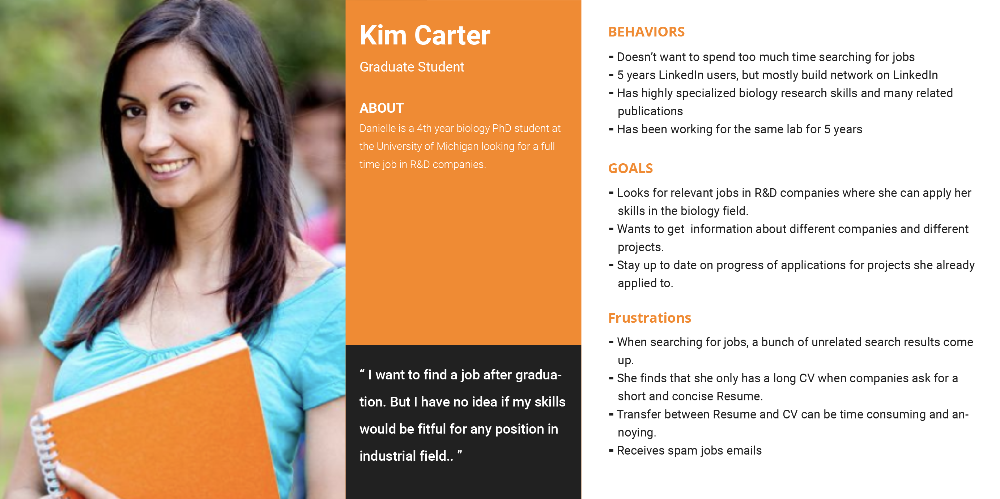

Overview
For Summer 2019, I worked as a UX/UI design intern at Perch under the ZLT program (Zell Lurie Institute for Entrepreneurial Studies at the University of Michigan). Perch is a startup trying to help students achieve their full career potential by connecting them to research opportunities. The core idea of Perch is that there is a niche for a job website specializing in research roles and connecting students with faculty or research labs. My main goals are redesigning the user flow, optimizing job search experience, and updating the UI library.
By adopting a new information architecture on the search results page, the filter tool, the job list, and the job description section are all on the same page. It is much easier for users to check the detailed information of different jobs on the same page rather than jumping back and forth among different windows.
By incorporating the onboarding process into the job application process, users would finish the signup process while submitting the job application.
Users can track the application progress and view all their saved jobs as well as job recommendations in the dashboard.
Design Process
Understanding
To get a general understanding of the original system, I created an interaction map of the Perch website. It helps me get a basic idea of the user flow and the UI style of the original Perch website. Findings: 1. Users apply to jobs by sending emails to professors or recruiters. 2. The UI seems very old and lacks consistency. 3. Users have to sign in or sign up to check job postings. 4. Users cannot keep tracking of their submitted applications.

To collect feedback from the current users, I conducted 5 interviews with students at the University of Michigan. I found out three general pain points during interviews, some of which match my findings from previous step:
With findings from interviews in mind, I conducted a competitive analysis to help me learn from currently existing solutions and see how do they solve those problems.
Key takeaways for job search platforms are: Pros: 1. Clean, professional, and consistent UI system. 2. It is more efficient to put the list of job postings and job description on the same page. 3. Users can apply to jobs without logging in. Cons: 1. Most platforms support users to upload Resume but not CV. 2. It is hard to distinguish industrial jobs and research jobs.
To summarize findings from previous steps, I generated three insights:
We created one primary and one secondary persona to help us define the needs and frustrations of our users. We used the persona as a tool to communicate with the rest of the team about our design decisions.
Primary Persona
Secondary Persona
Design Process
I summarized two high-level goals and created the action plan for each of them to help me achieve the design and communicate with the rest of the team.

In the following paragraphs, I will focus on the redesign of the onboarding process and the results page.
ITERATION 1: Users now can view job postings on Perch and need to provide their information before they can submit the job application.

FEEDBACK: - The signup flow is too long, lots of information might not be necessary at this step and users would easily be impatient during the filling-in process. - It is annoying that users are required to go through the signup process when they expect to submit the application.
ITERATION 2: Instead of having to sign up first, users now can submit applications without logging in, then users will be suggested to create a Perch account to keep track of their submitted application status. I reduced the signup process to only 3 steps and I also added a preview section in the signup process to help users manage their account information.

FEEDBACK: - Users would likely leave after submitting applications, they can track their application progress by receiving emails from recruiters, so we need to figure out how to encourage them to create an account. - The signup flow is shorter now, but there is still a chance that users might lose patience when doing this step, and the preview panel is not helpful. - Now the signup process and the application process are separate, we need to find a way to combine them.
ITERATION 3: The goal of this round of iteration is to incorporate the process of creating an account into the job application process, so we can encourage users to register rather than to force them to do that. We ask users to upload their CVs first. And before they can submit applications, the website would scan their CVs and generate digital CVs for them, so we can get all the information that we need to create an account. Users can sign up with just one click after submitting applications.

FEEDBACK: - This onboarding user flow is simple and intuitive. - We should let users know how many steps left to finish the signup process.
ITERATION 1: Users don't have to check a job description by opening it in a new tab and jump around between tabs to view different jobs. The job posting card would be expanded to show detailed information on the same page once users click on it.

FEEDBACK: - It can be annoying for users to extend many job posting cards at one time and this page can be super long and hard to navigate.
ITERATION 2: Instead of the 2-column layout for the results page, I adopted the 3-column layout which separates the job description section from the job posting list. The description section would be fixed when users click on different job postings

FEEDBACK: - Too much text and it feels a little bit overwhelming, adding something images can give users some breathing space and it also can be easier to navigate. - The information architecture of the job posting card is not clear and intuitive.
ITERATION 3: We started to do usability testings since we had a big change on the results page and we wanted to know what do users think of it. After getting feedback from users, we split up the search results into two types: the job posting and the faculty information. We also updated the layout design of the posting card to make it easier to skim through.
Usability Testing: We conducted 4 usability testings and most of the problems we found are with the job posting list section. Key findings are: - Users wanted to know when was the job posted. - For research opportunities, oftentimes applicants need to connect to professors directly to find out if they are hiring people. - Users have to move their eyes both vertically and horizontally to view the job posting, it is hard for them to quickly skim through the job list section.

FEEDBACK: - The filter tool might need more work on it. - Need to find a way to match users with the jobs that are fitful to them.
ITERATION 4: We kept doing more usability testings and also conducted a card sorting with users to help us know how to reorganize the hierarchy within the filter. To help users match with the right job, we designed the matching algorithm feature which would show what is the percentage that their skills match the job description.

Key findinds are: - The filter section should follow this hierarchy: results type, institution, location, and job type. - The institution and the location parts should allow users to search for keywords.

FEEDBACK: - The matching algorithm could just show the number instead of all of the metrics which can be complicated and unnecessary for users to understand.
Final Design
Hi-fi Prototypes
Dashboard
Search Results - Faculty
Search Results - Job
Landing Page - Applicant
Landing Page - Employer
Takeaways
User-centered design. It’s true, but in real-world we need to balance with business needs. Such as from users’ needs, providing less functions can simplify workload and enhance efficiency. But more functions can increase user retention from business target. How to solve this conflict? This is where UX designer is needed to solve the problem and come up with new ideas! With keeping in mind both users’ needs and business target constraints.
Closer cooperation with PMEspecially when coming up with new ideas, closer cooperate with PM to make sure if the problem exists and is suitable for the target user group. This step is crucial to make sure everyone in the team are on the same page.